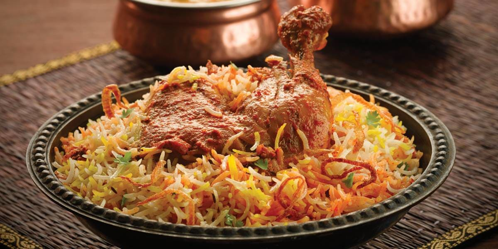

Chicken Biryani

Description
Chicken Biryani is a savory chicken and rice dish that includes layers of chicken, rice, and aromatics that are steamed together. The bottom layer of rice absorbs all the chicken juices as it cooks, giving it a tender texture and rich flavor, while the top layer of rice turns out white and fluffy. Buried in the Biryani, you’ll find whole cuts of succulent chicken bursting with flavor from the potent array of spices, herbs, and aromatics it’s marinated in.
Whether you’re talking Arroz con Pollo, Hainanese Chicken Rice, or Oyako Donburi, chicken and rice is a classic pairing that has permeated culinary culture around the world. It makes sense that earlier in human history, this staple seed would be combined with a domesticated source of protein. Still, the fact that this combination has endured as a popular favorite today, speaks to its unassailable deliciousness.
For my version, I’ve simplified the preparation a bit by marinating the chicken in a spicy mixture of garam masala, garlic, ginger, chili peppers, cilantro, and garlic. When fried, the spices and aromatics on the exterior of the chicken caramelize into an insanely flavorful crust. I like to cook the onions separately, as it allows you to fully caramelize them into a sweet umami-packed layer that contrasts the spicy, savory chicken. For the rice, a quick par-boil with cardamom, bay leaves, and cumin infuses some flavor, while ensuring the rice is tender enough steam after the Biryani is assembled.
Ingredients
- 4 tablespoons vegetable oil
- 4 small potatoes, peeled and halved
- 2 large onions, finely chopped
- 2 cloves garlic, minced
- 1 tablespoon minced fresh ginger root
- ½ teaspoon chili powder
- ½ teaspoon ground black pepper
- ½ teaspoon ground turmeric
- 1 teaspoon ground cumin
- 1 teaspoon salt
- 2 medium tomatoes, peeled and chopped
- 2 tablespoons plain yogurt
- 2 tablespoons chopped fresh mint leaves
- ½ teaspoon ground cardamom
- 1 (2 inch) piece cinnamon stick
- 3 pounds boneless, skinless chicken pieces cut into chunks
- 2 ½ tablespoons vegetable oil
- 1 large onion, diced
- 1 pinch powdered saffron
- 5 pods cardamom
- 3 whole cloves
- 1 (1 inch) piece cinnamon stick
- ½ teaspoon ground ginger
- 1 pound basmati rice
- 4 cups chicken stock
- 1 ½ teaspoons salt
Steps to cook:
- In a large skillet, in 2 tablespoons vegetable oil (or ghee) fry potatoes until brown, drain and reserve the potatoes. Add remaining 2 tablespoons oil to the skillet and fry onion, garlic and ginger until onion is soft and golden. Add chili, pepper, turmeric, cumin, salt and the tomatoes. Fry, stirring constantly for 5 minutes. Add yogurt, mint, cardamom and cinnamon stick. Cover and cook over low heat, stirring occasionally until the tomatoes are cooked to a pulp. It may be necessary to add a little hot water if the mixture becomes too dry and starts to stick to the pan.
- When the mixture is thick and smooth, add the chicken pieces and stir well to coat them with the spice mixture. Cover and cook over very low heat until the chicken is tender, approximately 35 to 45 minutes. There should only be a little very thick gravy left when chicken is finished cooking. If necessary cook uncovered for a few minutes to reduce the gravy.
- Wash rice well and drain in colander for at least 30 minutes.
- In a large skillet, heat vegetable oil (or ghee) and fry the onions until they are golden. Add saffron, cardamom, cloves, cinnamon stick, ginger and rice. Stir continuously until the rice is coated with the spices.
- In a medium-size pot, heat the chicken stock and salt. When the mixture is hot pour it over the rice and stir well. Add the chicken mixture and the potatoes; gently mix them into the rice. Bring to boil. Cover the saucepan tightly, turn heat to very low and steam for 20 minutes. Do not lift lid or stir while cooking. Spoon biryani onto a warm serving dish.